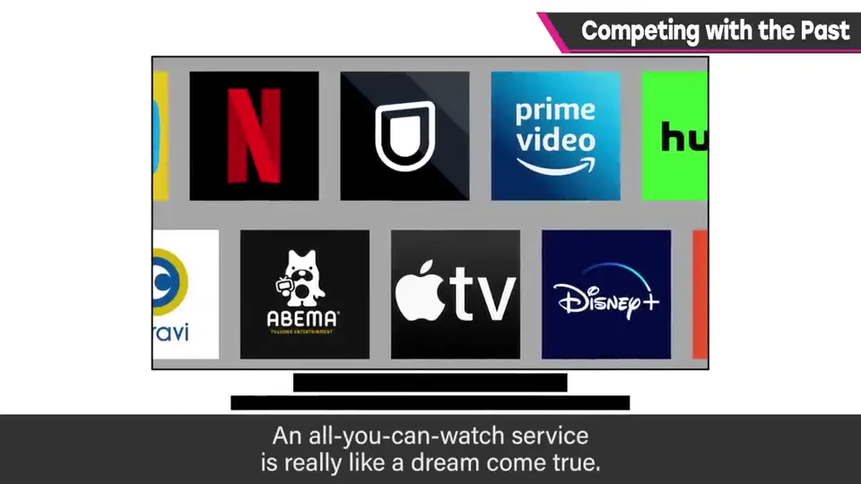
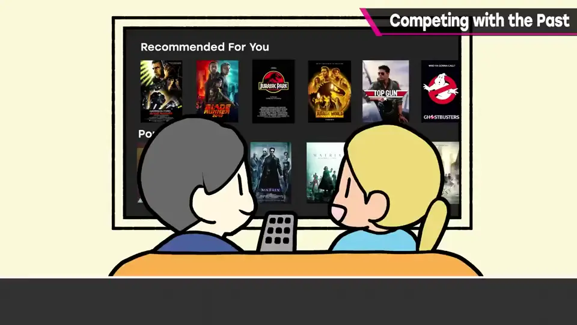
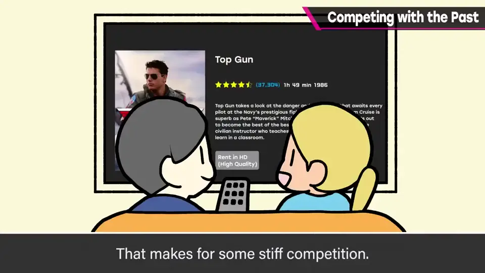
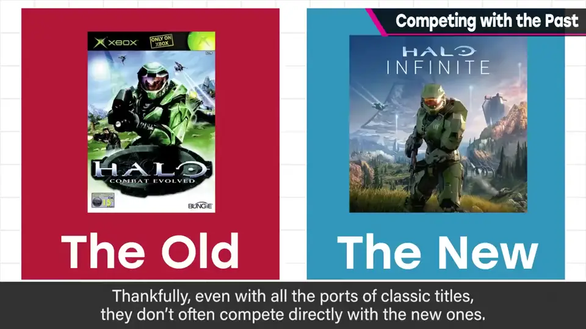
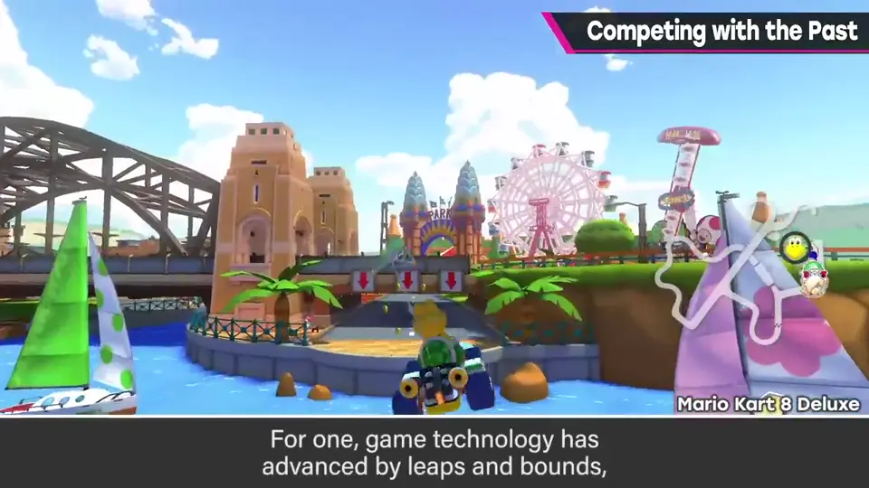
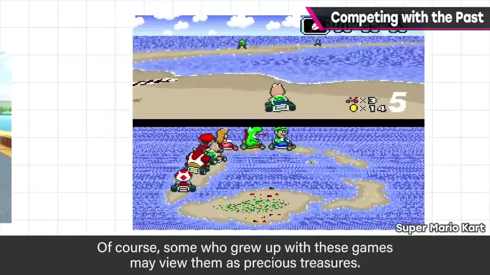
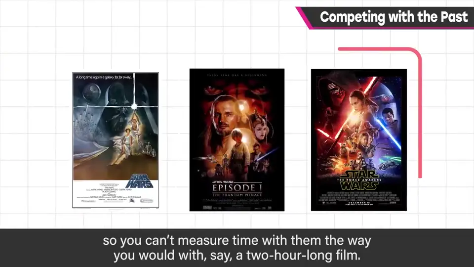
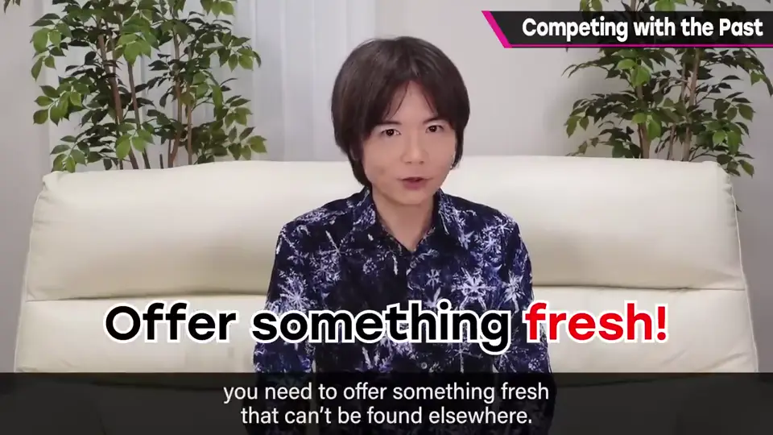
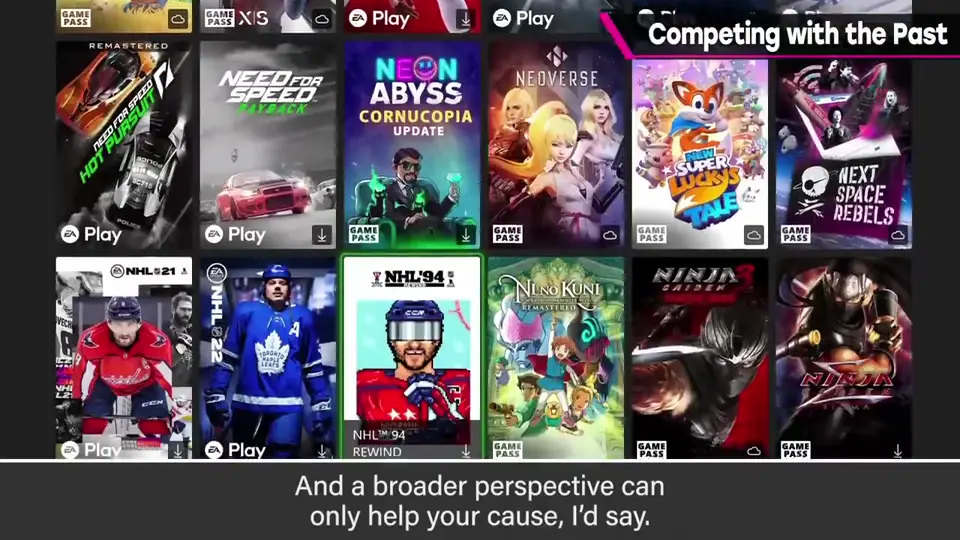

速览
做游戏很辛苦，但樱井觉得影像制作的世界更难：因为订阅制，新作也要和过去的作品竞争。「看到饱」服务是梦幻般的机制：从数以万计的影像资源中随便选，方便、快速、便宜。于是现在制作的作品无一例外地暴露在与过去作品的竞争中：怎么也看不完的作品里，几年、几十年前的也同样摆着；观众的时间里，现在的作品和过去的作品以同等价值被观看。想拍电影、电视剧、动画的人很多，不会断绝，新作还会不断涌现——竞争残酷。就与过去竞争而言，游戏可能还算好：值得庆幸的是老游戏被大量移植，但并不是在同一层面争夺。首先游戏技术进步惊人，旧画面和操作性未必能满足人（对当年的人而言却可能像宝物）；其次游戏规模不同，80 年代的游戏规模小、马上就能玩，不能像电影那样用 2 小时来衡量。不过免费游戏、手游市场或「占用时间」的竞争也许相当残酷，这先放一边。电影、电视剧、动画、游戏等娱乐作品，基本上是靠创作者的喜爱与投入支撑的市场；要在其中脱颖而出，最好是做更新颖、只有这部作品才有的东西——做得到就不用背负什么了。意识到过去与现在之间存在竞争，没有坏处，视野放宽一点更好。也许 YouTube 也一样——他会在小众的频道里努力。
1. 订阅制带来的竞争 0:04
做游戏很辛苦，但影像制作的世界更难：因为订阅制，新作也要和过去的作品竞争。

「看到饱」服务是梦幻的机制：从数以万计的影像中随便选，方便、快速、便宜。


想做电影、电视剧、动画的人很多，不会断绝，新作还会不断涌现——竞争残酷。
2. 游戏还算好？ 1:13
就与过去竞争而言，游戏也许还算好：老游戏被大量移植，但并不是在同一层面争夺。

- 技术进步惊人：旧画面和操作未必能让人满足——尽管对当年的人来说可能像宝物。


- 规模不同：80 年代的游戏小、马上能玩，不能像电影那样用「2 小时」来衡量。

不过免费游戏、手游市场或「占用时间」的竞争也许相当残酷，这里先放一边。
3. 怎样脱颖而出 2:00
电影、电视剧、动画、游戏等娱乐作品，基本上是靠创作者的热爱与投入支撑的市场。

4. 放宽视野 2:34
意识到过去与现在之间存在竞争并不吃亏，视野放宽一点更好。也许 YouTube 也是如此——他会在小众的频道里努力。

自测题
1. 为什么订阅制让影像作品与过去竞争？
看到饱服务中新旧作品同列，在观众时间里以同等价值被观看。 0:40
2. 游戏与过去竞争的压力为什么相对小？
技术进步使旧画面/操作未必满足人，且游戏规模不同，不能用固定时长衡量。 1:30
3. 樱井认为脱颖而出的最好方法是？
做出更新颖、只有这部作品才有的东西。 2:15